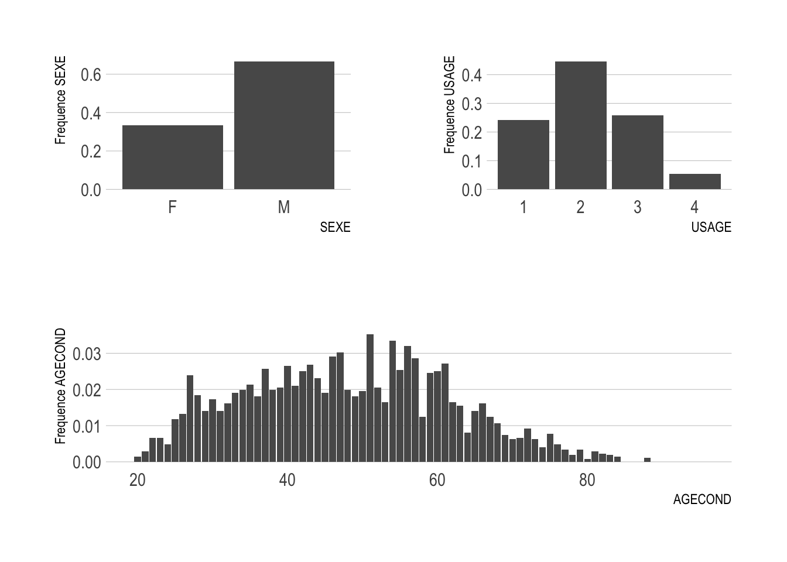

Chapter 1 Études statistiques
Cette partie de ce document sera consacrée à l’étude statistique de notre jeu de données. Pour commencer nous allons calculer la somme totale des sinistres par police.
library(haven)
database <- read_sas("Data/base5.sas7bdat",
NULL)library(dplyr)
database$SumSINAPS <- database %>% select(starts_with("SINAP")) %>%
apply(., 1, sum)Nous venons de créer avec le code précédent une nouvelle colonne dans la base de données data que nous avons appelé SumSINAPS.
On peut facilement faire un sommaire de la somme des sinistres avec la fonction summary afin de connaître les mesures de tendance de cette variable.
summary(database$SumSINAPS)## Min. 1st Qu. Median Mean 3rd Qu. Max.
## 0.000 0.000 1.000 1.385 2.000 12.0001.1 Tests statistiques
Nous allons faire des testes statistiques histoire de connaître quelle loi suit la somme totale des sinistres SumSINAPS
1.1.1 Tests d’adéquation
Les tests d’adéquation servent à tester si un échantillon est distribué selon une loi
de probabilité donnée. Ils permettent de décider, avec un seuil d’erreur \(\alpha\) spécifié, si les écarts présentés par l’échantillon par rapport aux valeurs théoriques attendues sont dûs au hasard ou sont au contraire significatifs.
Pour faire les tests, nous allons générer une variable aléatoire \(X\) suivant une loi choisie, puis tester si la somme totale des sinistres SumSINAPS est de même loi.
SumSINAPS <- database$SumSINAPS1.1.1.1 Loi de poisson
#Generer une v.a de longueur indentique a celle de SumSINAPS et suivant la loi de poisson
X=rpois(length(SumSINAPS),mean(SumSINAPS))
#test de poisson
ks.test(SumSINAPS,X)## Warning in ks.test.default(SumSINAPS, X): p-value will be approximate in the
## presence of ties##
## Asymptotic two-sample Kolmogorov-Smirnov test
##
## data: SumSINAPS and X
## D = 0.061311, p-value < 2.2e-16
## alternative hypothesis: two-sidedLa \(p\)-\(value\) est inférieure à \(0.5\) donc on rejette l’hypothèse \(H_0\) selon laquelle la somme des sinistres suit une loi de poisson.
1.1.1.2 Loi normale
On peut tester graphiquement si une variable suit une loi normale avec la fonction qqnorm. Si le nuage de point s’apparente à une droite alors la variable pourrait suivre une loi normale sinon on rejette cette hypothèse.
qqnorm(SumSINAPS)
Il est très difficile de conclure à partir d’un graphe qqnorm si une variable pourrait effectivement suivre une loi normale. D’ailleur c’est pourquoi il est préférable d’utiliser le test de normalité de Carlos Jarque et Anil K. Bera appelé Jarque–Bera test. Sur R, ce test peut être effectué avec la fonction jarque.bera.test() disponible dans le package tseries.
\(\begin{cases} H_0: Les\; résidus\; suivent\; une\; loi\; normale\\ H_1: Les \;résidus\; ne\; suivent\; pas\; une\; loi\; normale \end{cases}\)
#install.packages("tseries")
library(tseries)## Registered S3 method overwritten by 'quantmod':
## method from
## as.zoo.data.frame zoojarque.bera.test(SumSINAPS)##
## Jarque Bera Test
##
## data: SumSINAPS
## X-squared = 8625.6, df = 2, p-value < 2.2e-16Le test précédent indique que la \(p\)-\(value\) est inférieure largement à \(0.5\), on rejette alors l’hypothèse \(H_0\) de normalité de SumSINAPS avec un niveau de confiance de \(95%\)